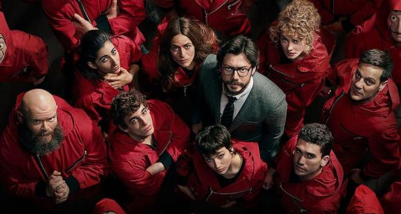

le case de papel
Серіал знятий у жанрі кримінальної драми або, точніше, фільму-пограбування. Дія розгортається навколо групи авантюристів на чолі з Професором, що планують пограбування Іспанського королівського монетного двору.
Пройдіть тест та ми допоможемо вам обрати серіал

Серіал знятий у жанрі кримінальної драми або, точніше, фільму-пограбування. Дія розгортається навколо групи авантюристів на чолі з Професором, що планують пограбування Іспанського королівського монетного двору.
Події відбуваються у вигаданих Північних королівствах, яким загрожує завоюванням імперія Нільфгаард. Ці держави населяють головним чином люди умовного пізнього середньовіччя, але також і різні фантастичні істоти, котрі тепер перебувають у скрутному становищі. В змішаному хронологічному порядку зображаються історії трьох головних персонажів: відьмака Ґеральта, що бореться за винагороду з чудовиськами, амбітної чарівниці Єннефер і юної королеви Цірілли, що стала прийомною дочкою Ґеральта.
| Фантастика | Драма | Ситком |
|---|---|---|
| Сотня | Гра престолів | Теорія великого вибуху |
| Флеш | Емілі в Парижі | Бруклін 9-9 |
| Пацани | Пліткарка | Південний парк |